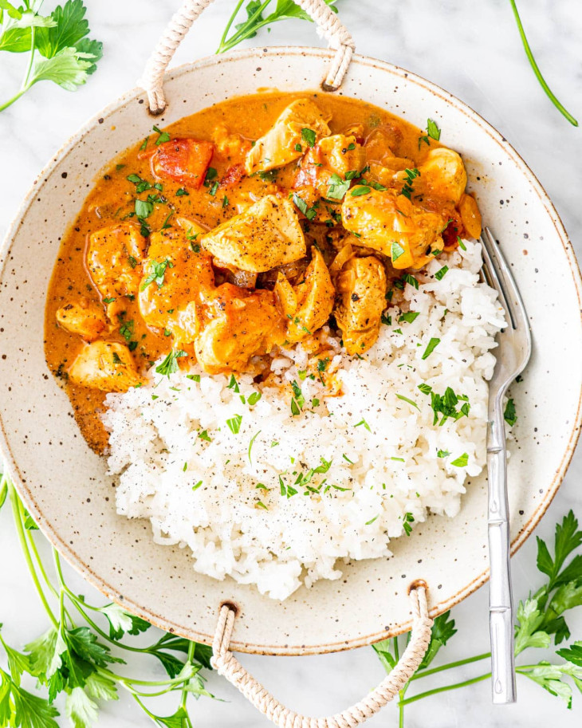

Chicken Curry

Chicken curry
For lunch, I personally prefer something relatively healthy with a lot of proteins for muscle growth,
the following recipe takes about 35minutes cooking time, but it's worth it!
Ingredients:
- 400g chicken breasts
- 100g basmatti rice
- 500 ml cream for cooking
- 1 medium onion
- 3 cloves of fresh garlic
- 1 beefstock cube
- fresh ginger
- parsley
- salt, pepper, smoked paprika, granulated garlic, curry
Steps:
- Cut the chicken in cubes, marinate them by your own taste, start by:
- add 1tsp of oil
- add salt,pepper,smoked paprika, granulated garlic
- mix thoroughly and let it rest while you start step2
- Cut 1 medium onion in cubes and start sauteing in a pot with a tsp of oil,
once the onion gets transparent, crush 1 beefstock cube in and mix, then add the rice,
and mix for aproximatelly 2min, then add water, cover the pot and let it slowly boil for 25 minutes
- Oil up a pan, pour in the marinated chicken and start cooking it on medium for cca 12 minutes so
it nicely golden and brown, crush in the 3 cloves of garlic and cook for 1 minute (overcooking
the garlic, makes it taste dreadful.) Pour in the cream and boil everything on low heat for 10
minutes, add freshly grated ginger and curry powder and cook for 5 more minutes.
- Put the freshly cooked rice in a bowl, and pour the chicken curry onto it
- Top it of with some fresh parsley and enjoy :)
Sidenote:for a more rich flavour, cook 3 cubed onions before adding the chicken and add some fresh cherry tomatoes.
Add some peanuts at the end to apply crunchiness to the dish
Return to home page